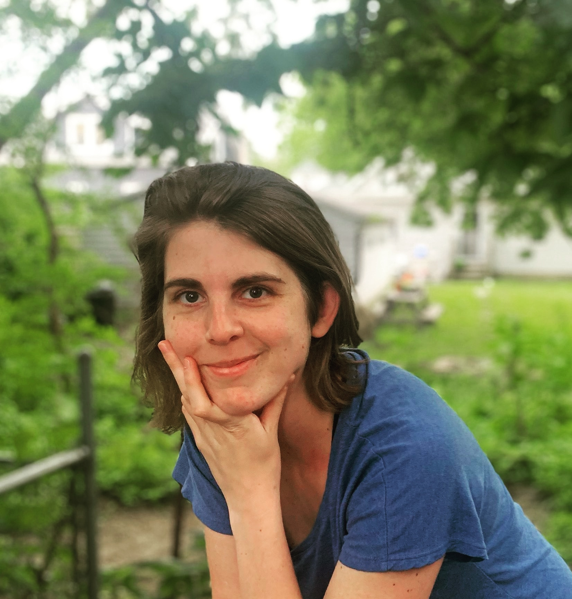

Home

I completed my Ph.D. in Computer Science at the University of Illinois at Urbana-Champaign in Fall 2020, advised by Dr. Steven M. LaValle. I am now a Postdoc in Dr. Kirstin Petersen’s Collective Embodied Intelligence Lab in the Electrical and Computer Engineering Department at Cornell University.
Research Interests: Design of algorithms and data structures for robust motion and task planning of mobile robots, with a focus on minimalism. I’m interested in minimality both theoretically and practically. On the theory side, I’m interested in problems such as finding the minimum sensor information required to complete a task, or computing minimum-complexity controllers. On the practical side, I’m interested in both making robots more sustainable (longer battery life, etc) and applying simple robots to solve problems in agriculture and ecology with robust, persistent robot monitoring. I also collaborate with practitioners in the “embodied” arts and sciences (dance, animal interaction, biology, etc) to make such robots more effective and amplify insights from these fields.
My Ph.D. was focused on motion planning for robots that have structured interactions with boundaries of their environment. Examples include robot vacuums that bump into walls to guarantee they autonomously patrol a space without requiring onboard mapping; or micro-robots that swim blindly until they collide with objects, enabling micro-scale construction. My approach involved computing coarse characterizations of the geometry and dynamics of robot trajectories. By establishing equivalence classes over the environment and control spaces, we allow for nondeterminism and uncertainty at the planning stage and still compute plans that have analytical guarantees on their stability and long-term dynamical behavior. This allows us to use the intrinsic, messy dynamics of the robot to engineer robust high-level behaviors such as navigating or patrolling a space, or even object manipulation or self-assembly.
My CV is here. You can see some of my current projects on Google Scholar and my github.
News
- May 2022: I will be attending ICRA 2022 in-person in Philly to co-organize workshops on math and art! Please reach out if you’d like to meet up!
- Spring 2022: I have assisted with one paper and led another on soft, inflatable robot collectives. I am excited about the implications of this work for micro-robotics as well as macro-scale robot collectives in aquatic and human-robot interaction settings!
- February 2021: Our IJJRR paper on bouncing robots was finally published. This is the reference I recommend for our proofs on convergence and synthesis of periodic orbits for robots that can reorient at environment boundaries.
- January 2021: Starting my postdoc! Very excited!!
- October 2020: Passed my defense and submitted my thesis!!
- February 2020: Successfully passed my prelim! Thanks to my committee (Steve LaValle, Nancy Amato, Sayan Mitra, and Todd Murphey) for all the feedback. Now I am synthesizing their feedback, cleaning up some code, wrapping up projects, and writing my thesis! Hoping to defend around September or October 2020. Considering employment opportunities in both academia and industry; please contact me if you are interested in working together!
- August 2019: I will be a TA for ECE 470: Introduction to Robotics. Excited to work with Dr. Katie Driggs-Campbell to revamp this course!
- August 2019: Presented a poster on underactuated self-assembling robots at MRS 2019. Lots of weird and interesting projects here, and got some good inspiration for next steps toward collective manipulation! Thanks to the organizers, especially for the travel grant!
- June 2019: I spent a few weeks in Europe, first at the incredible summer school at the Center for Ubiquitous Computing at University of Oulu, where I learned so much about the design process, and got to get my hands on some hardware after a long time spent in theory-land. Then I went to RSS 2019 and presented at the workshop on Robust Task and Motion Planning. Thanks to the organizers for some illuminating discussions!
- March 2019: Four undergraduates in the Motion Strategy Lab, Justin Wasserman, Austin Born, Chris Horn, and John Born were awarded $1000 from the Leung Student Venture Fund Award to put toward our research project on self-assembling, underactuated robots.
- December 2018: I travelled to beautiful Mérida, Mexico to WAFR 2018 to present our paper, A Visibility-Based Approach to Computing Nondeterministic Bouncing Strategies. I travelled there with my undergraduate co-author, Samara Ren, and met up with our other co-authors, Steve and Israel Becerra, former MSL post-doc. Happy to have seen old and new friends, and to have learned so much from them!